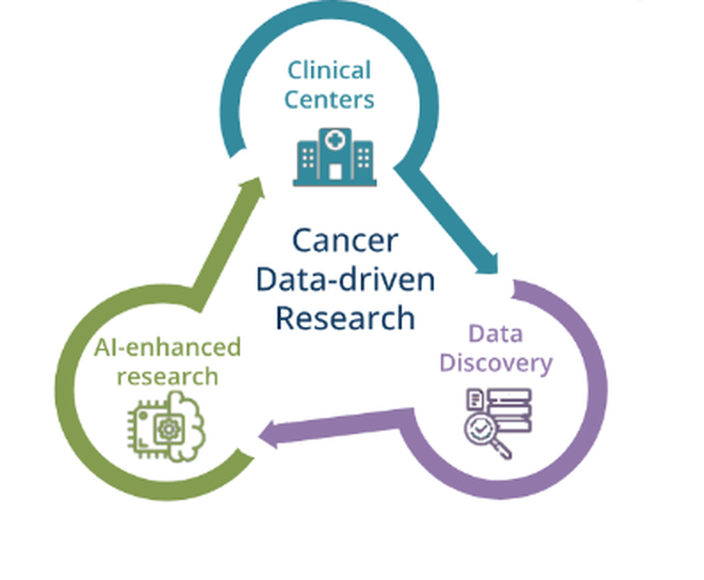

A trusted data management and curation platform for enhancing AI cancer imaging
leveraging the most established, secure and tested data infrastructures and curation tools

EuCanImage consorcium has built a secure, federated and large-scale Europena cancer platform, with capabilities to greatly enhance the potential of artificial
intelligence (AI) in oncology. As a result, completely new data resources over 250,000 single subjects are being curated, annotated and made public
at the platform to investigate unmet clinical needs. The platform includes:
What you can do
- Browse curated cancer datasets
- Access AI tools for medical imaging
- Discover insights through interactive dashboards
- Read documentation and case studies